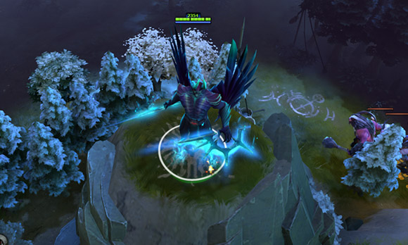
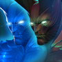
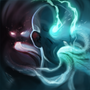

 恐怖利刃
恐怖利刃
背景故事
恐怖利刃是恶魔中的掠夺者——这个无法无天的魔头就连恶魔都惧怕三分。他曾因对恶魔领主动了贼念，无视了所有规范他行为的基本法则，触犯了七度地狱的所有法规。他被好好上了一课：原来还有比地狱更可怕的地方。接下来是短暂又残酷的审问，最终他被打入了荒邪之狱，这是一个隐藏的位面，恶魔们将它们的同类囚禁在这里。荒邪之狱并不是普通的监狱，这是现实的暗黑镜像，恶魔经过判决都到这里来直视他们自身灵魂中的扭曲倒影。然而恐怖利刃不但没有受苦，反而将自身最邪恶的倒影转化成了操控自如的力量，并将他的恐怖全数释放。
倒影 无法以倒影为目标，而且倒影不受任何伤害。 魔法消耗：50
冷却时间：22/20/18/1
|
惑幻 魔法消耗：70
冷却时间：16
|
魔化 恐怖利刃变换形态，化身成可怕的恶魔并具备远程攻击能力。任何恐怖利刃的幻象在900范围内也将魔化。 幻影斧的冷却时间将由恐怖利刃开启幻影斧时所处的近战或远程形态决定。 魔法消耗：50
冷却时间：140.0
|
魂断 隔断恐怖利刃以及目标英雄的灵魂并将双方的当前血量进行互换。交换后双方英雄的生命值必定在一定百分比以上。 魔法消耗：200/100/0
冷却时间：120.0/80.0
|